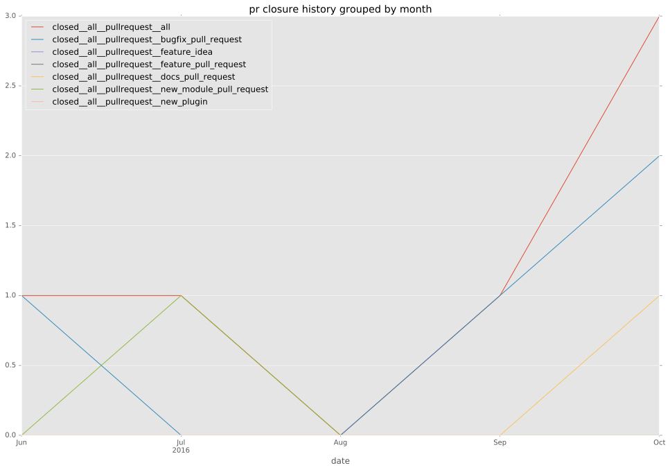

authors
- hnakamur
maintainers
- hnakamur
contributors
- illenseer : 2 commits
- hnakamur : 226 commits
- jpic : 7 commits
- bcoca : 2 commits
total issue counts
bugfix pull request: 4
pullrequest: 5
issue: 3
new plugin: 1
bug report: 3
issue history
pullrequest history

days open by issue type
all
count: 8
std: 26.2243071541
min: 0
max: 59
median: 13.5
mean: 22.5
pullrequest
count: 0
std: nan
min: nan
max: nan
median: nan
mean: nan
bugfix pull request
count: 4
std: 17.5
min: 0
max: 35
median: 0.0
mean: 8.75
issue
count: 0
std: nan
min: nan
max: nan
median: nan
mean: nan
new plugin
count: 2
std: 0.0
min: 59
max: 59
median: 59.0
mean: 59.0
bug report
count: 2
std: 17.6776695297
min: 1
max: 26
median: 13.5
mean: 13.5
closures grouped by total days open